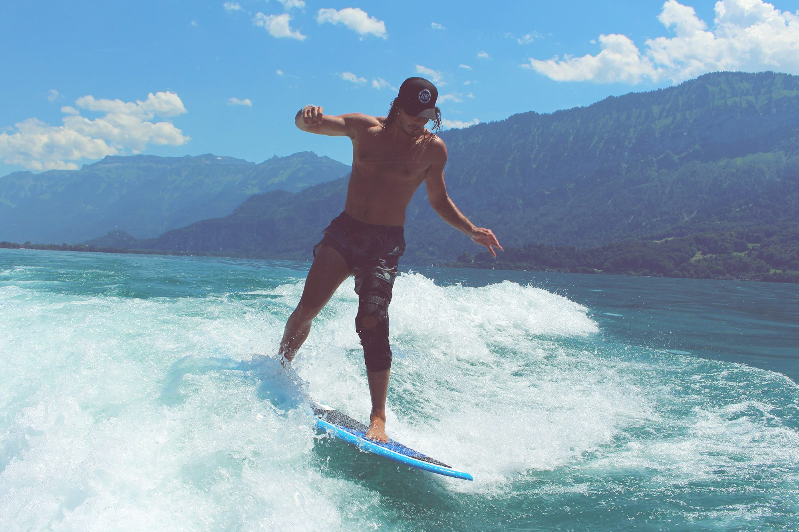

Embracing the Waves: The Art and Joy of Surfing
A comprehensive exploration of surfing, highlighting its rich culture, various styles, and the unique experiences it offers to enthusiasts around the world.At its core, surfing connects individuals with nature in a profound way. The rhythmic motion of the waves, the salty breeze, and the vastness of the ocean create an environment that encourages mindfulness and presence. Many surfers describe the experience as a form of meditation, where the world fades away and the only focus is on the water and the wave ahead. This connection to nature is one of the most compelling aspects of surfing, drawing enthusiasts to the shoreline in search of the perfect ride.
The culture of surfing is rich and diverse, encompassing a community of passionate individuals united by their love for the ocean. Surfers often share a unique bond, formed through shared experiences and mutual respect for the ocean. From local beach breaks to world-renowned surf spots, each location fosters a distinct culture that influences the surfing experience. Surfers often gather to exchange tips, share stories, and celebrate their love for the sport, creating a sense of camaraderie that transcends geographical boundaries.
One of the most popular styles of surfing is shortboarding, characterized by smaller, more agile boards that allow for quick turns and dynamic maneuvers. Shortboarders often ride waves with incredible speed and precision, performing aerial tricks and radical turns that showcase their skill and athleticism. The thrill of shortboarding is contagious, drawing many newcomers to the sport who are eager to experience the rush of catching a wave.
Shortboarding requires a deep understanding of wave dynamics and timing. Surfers must be adept at reading the ocean to anticipate where the best waves will break and how to position themselves for the ride. This skill is honed through practice and dedication, as surfers spend countless hours in the water, refining their techniques and building their confidence. The excitement of landing a perfect maneuver or catching an unexpected wave fuels the passion of shortboarders, inspiring them to continually push their limits.
In contrast to the high-energy nature of shortboarding, longboarding offers a more graceful and relaxed approach to riding waves. Longboards, typically measuring 9 feet or longer, provide stability and allow surfers to engage in classic maneuvers such as noseriding and cross-stepping. This style emphasizes smooth, flowing movements that highlight the beauty of both the surfer and the wave.
Longboarders often embody a sense of artistry on the water, viewing their rides as a form of self-expression. The slower pace of longboarding allows surfers to connect more deeply with the ocean, appreciating the intricate details of each wave. This artistic approach fosters a sense of mindfulness, encouraging longboarders to savor each moment spent riding the waves.
The longboarding community is known for its welcoming spirit and encouragement of newcomers. Surf events often celebrate the style, featuring competitions and exhibitions that highlight the unique skills of longboarders. This sense of community fosters a supportive environment, where surfers can learn from one another and share their experiences on and off the water.
For those seeking the ultimate thrill, big wave surfing represents the pinnacle of the sport. Riders take on massive swells that can reach heights of 20 feet or more, requiring not only skill but also courage and experience. Big wave surfers often train rigorously to prepare for these formidable challenges, gaining a deep understanding of the ocean’s power and dynamics.
The adrenaline rush of catching a giant wave is unmatched, drawing surfers to renowned spots like Jaws in Hawaii or Mavericks in California. These locations are celebrated for their epic conditions, attracting the world’s top big wave surfers who are eager to test their limits. The camaraderie among big wave riders is strong, as they share the same passion for tackling nature’s giants and supporting one another in their pursuits.
Tow-in surfing has revolutionized the approach to big waves, allowing surfers to catch swells that would be impossible to paddle into. Using personal watercraft, surfers can be towed into fast-moving waves, opening up a whole new realm of possibilities. This technique requires seamless communication between the surfer and the driver of the watercraft, demanding precision and teamwork.
The thrill of being towed into a massive wave is exhilarating, but it also emphasizes the importance of safety and respect for the ocean. Surfers must be aware of the risks involved and prioritize their well-being while pursuing their passion. The community surrounding tow-in surfing is characterized by mutual support, as experienced surfers share their knowledge and expertise with newcomers.
Stand-up paddleboarding (SUP) has emerged as a versatile and inclusive water activity that appeals to a wide range of enthusiasts. In SUP, surfers stand on larger boards and use paddles to navigate through the water, allowing for a unique blend of balance and strength. This style can be practiced in various environments, from calm lakes to ocean waves, making it accessible to people of all skill levels.
One of the most appealing aspects of SUP is its adaptability. Surfers can enjoy leisurely paddles on flatwater, engage in wave riding, or even practice yoga on their boards. This versatility makes SUP a popular choice for families and those new to water sports. The community surrounding stand-up paddleboarding is diverse, with participants of all ages coming together to share their experiences and foster a love for the water.
Bodyboarding, another exciting discipline, allows surfers to ride smaller foam boards while lying on their bellies or knees. This style emphasizes accessibility and fun, making it an attractive option for beginners. Bodyboarders often ride waves closer to the shore, performing maneuvers such as spins and rolls that showcase their creativity and agility.
The bodyboarding community is known for its inclusivity, encouraging newcomers to embrace the sport without the intimidation that can sometimes accompany traditional surfing. The sense of freedom experienced while bodyboarding allows participants to fully immerse themselves in the ocean, enjoying the rush of the waves in a unique way.
Tandem surfing introduces an exciting twist to the sport, as two surfers ride a single board together. This discipline requires trust and teamwork, with one surfer (the driver) guiding the ride while the other performs lifts and tricks. Tandem surfing not only showcases impressive skills but also emphasizes the beauty of collaboration in the water.
Tandem performances often captivate audiences, creating a visual spectacle that highlights the connection between the two surfers. This discipline is a testament to the artistry and creativity that can be found in surfing, encouraging participants to explore new ways of expressing themselves on the waves.
Finally, skimboarding offers a thrilling alternative to traditional surfing, taking place in the shallow waters near the shore. Surfers use smaller boards to run along the sand and drop onto the thin wash of incoming waves, performing tricks as they ride back to the beach. Skimboarding emphasizes agility and balance, appealing to those who enjoy a more playful and spontaneous approach to wave riding.
The simplicity of skimboarding equipment and the proximity to the shore make it an accessible entry point for newcomers to water sports. Many find joy in the challenge of catching waves close to the beach, creating a sense of excitement and accomplishment with each ride.
Ultimately, surfing is a multifaceted sport that encompasses a variety of styles and experiences. Whether you’re drawn to the adrenaline of shortboarding, the artistry of longboarding, or the thrill of big wave riding, there is a unique journey awaiting every surfer. The connections formed with the ocean, fellow surfers, and the community at large create a rich tapestry of experiences that extend far beyond the waves.
As surfers continue to embrace the ocean’s power and beauty, they cultivate a deep appreciation for the natural world and the moments spent riding the waves. The rhythmic ebb and flow of the ocean serves as a reminder of the joy that comes from being present, celebrating the artistry and thrill that surfing brings to life.